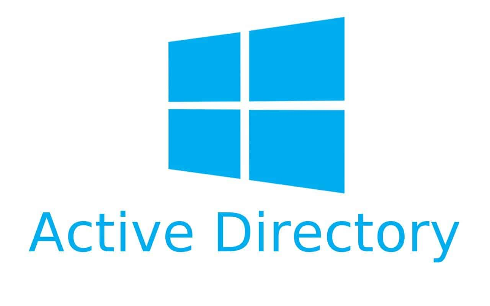

Active Directory
Table of Contents

Figure 1: Your worst (configuration) nightmare.
Figure 2: Your worst (configuration) nightmare.
Figure 3: Your worst (configuration) nightmare.
Most of the examples will be based on TCM's Practical Ethical Hacking.
Tools
…
Attacks
LLMNR
…
SMB Relaying
…
IPv6 Attacks
…
Domain Enumeration
Bloodhound
Install or update bloodhound.
$ sudo pip install bloodhound
note: python2.8 deprecated in kali so -> pip3?
Run neo4j.
$ sudo neo4j console
Running for the first time, log in with the credentials neo4j:neo4j. It will then ask you to reset the password.
After logging in, run bloodhound. The username and password will be the neo4j credentials.
$ sudo bloodhound
Time to pull down the data with an injestor. Let's make a folder and cd into it.
$ mkdir bloodhound; cd bloodhound
Running bloodhound-python.
$ sudo bloodhound-python -d <DOMAIN> -u <USER> -p <PASSWORD> -ns <DC-IP> -c all
Flags
-d |
Domain |
-u |
User |
-p |
Password |
-ns |
Nameserver which is Domain Controller IP |
-c |
Collect |
Let's run it.
$ sudo bloodhound-python -d MARVEL.local -u fcastle -p Password1 -ns 172.16.68.128 -c all
Back to Bloodhound, click on the right side vertical bar Upload Data and then select all the files that we generated before.
Plumhound
Used mostly by Blue and Purple teams, it can still have a use by Red teams.
note: You need to have Bloodhound up and running, check requirements.
Install PlumHound.
$ git clone https://github/PlumHound/PlumHound $ sudo pip3 install -r requirements.txt
Using PlumHound, quick query of the domain.
$ sudo python3 PlumHound.py --easy -p <PASSWORD>
Flags
--easy |
Test |
-p |
Password for neo4j |
Let's run it again with a task.
$ sudo python3 PlumHound.py -x tasks/default.tasks -p neo4j123
Let's check the reports.
$ cd reports; firefox index.html
Done!
PingCastle
It's a very good tool to analyze the security of a Active Directory domain.
note: PingCastle has to be used from a computer joined to the Active Directory environment you wish to assess.
Having a propietary license, the usage on owned and managed networks is free but in case of a external pentest, a license is required.
Download from https://www.pingcastle.com/download/ and run PingCastle.exe as admin.
Running 1-healthcheck will take around 4-5 minutes and output a html file.